第2章
向心力的确定
命题1 定理1
作环绕运动的物体，其指向力的不动中心的半径所掠过的面积位于同一不动的平面上，而且正比于画出该面积所用的时间。
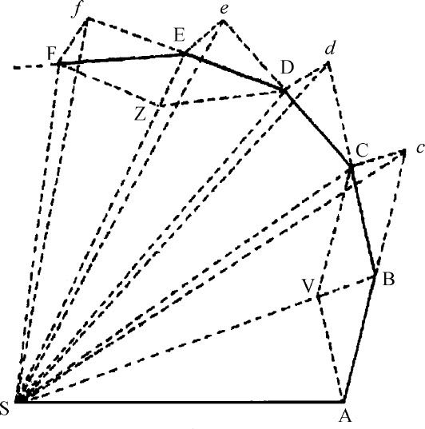
设时间分为相等的间隔，在第一时间间隔里物体在其惯性力作用下扫过直线AB。在第二时间间隔里，物体将（由定律Ⅰ）沿直线Bc 一直运动到c ，如果没阻碍的话，Bc 等于AB，所以由指向中心的半径AS，BS，c S，可以得到相等的面积ASB，BSc 。但当物体到达B时，设向心力立即对它施以巨大推斥作用，使它偏离直线Bc ，迫使它沿直线BC运动。作c C平行BS，与BC相交于C，在第二时间间隔最后，物体（由定律推论Ⅰ）将出现在C，与三角形ASB处于同一平面，连接SC，由于SB与Cc 平行，三角形SBC面积等于三角形SBc ，所以也等于三角形SAB，由于同样理由，向心力依次作用于C，D，E等点，并使物体在每一个时间间隔内画出直线CD，DE，EF等，它们都处于同一平面。而且三角形SCD等于三角形SBC，SDE等于SCD，SEF等于SDE。所以，在相同时间里，在不动平面上画出相等面积：而且由命题，这些面积的任意的和SADS，SAFS都分别正比于它们的时间。现在，令这些三角形的数目增加，它们的底宽无限减少；（由引理3推论Ⅳ）它们的边界ADF将成为一条曲线：所以向心力连续使物体偏离该曲线的切线；而且，任意扫出的面积SADS，SAFS原先是正比于扫出它们所用时间的，在此情形下仍正比于所用时间。
证毕。
推论Ⅰ．被吸引向不动中心的物体的速度，在无阻力的空间中，反比于由中心指向轨道切线的垂线。因为在处所A，B，C，D，E的速度可以看做是全等三角形的底AB，BC，CD，DE，EF，这些底反比于指向它们的垂线。
推论Ⅱ．如果两段弧的弦AB，BC相继由同一物体在相等时间里画出，在无阻力空间中，作平行四边形ABCV，则该平行四边形的对角线BV，在对应弧长无限缩小时所获得的位置上延长，必定通过力的中心。
推论Ⅲ．如果弧的弦AB，BC与DE，EF在相等时间内画出，在无阻力空间中，作平行四边形ABCV，DEFZ，则在B和E点的力之比与对应弧长无限缩小时对角线BV，EZ的最后比相同。因为物体沿BC和EF的运动是（由本定律推论Ⅰ）沿Bc ，BV和Ef ，EZ运动的复合；但在本命题证明中，BV和EZ等于Cc 和Ff ，是由于向心力在B和E点的推斥作用产生的，所以正比于这些推斥作用。
推论Ⅳ．无阻力空间中使物体偏离直线运动并进入曲线轨道的力，正比于相等时间里所画出的弧的正矢，该正矢指向力的中心，并在弧长无限缩小时等分对应弦长。因为这些正矢是推论Ⅲ中对角线的一半。
推论Ⅴ．所以，这种力与引力的比，正如所讨论的正矢与抛体在相同时间内画出的抛物线弧上垂直于地平线的正矢的比。
推论Ⅵ．当物体运动所在平面，以及置于该平面上的力的中心不是静止的，而且做匀速直线运动的，上述结论（按定律推论Ⅴ）依然有效。
命题2 定理2
沿平面上任意曲线运动的物体，其半径指向静止的或做匀速直线运动的点，并且关于该点掠过的面积正比于时间，则该物体受到指向该点的向心力的作用。
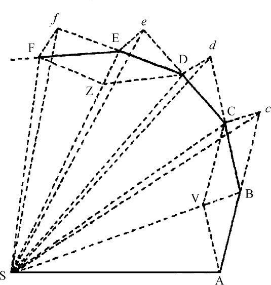
第一种情形：任何沿曲线运动的物体（由定律Ⅰ）都受到某种力的作用迫使它改变直线路径。这种迫使物体离开直线运动的力，在相等时间里，使物体画出最小的三角形SAB，SBC，SCD等等，关于不动点S（由欧几里得《几何原本》第一卷命题40和定律Ⅱ）作用于处所B，其方向沿着平行于c C的直线，即沿着直线BS的方向。而在处所C，沿着平行于d D的直线的方向，即沿着直线CS的方向，等等；所以它总是沿着指向不动点S的方向。
证毕。
第二种情形：（由定律推论Ⅴ）物体作曲线运动所在的面，不论是静止的，或是与物体，与物体画出的图形，与中心点S一同做匀速直线运动，都没有区别。
推论Ⅰ．在无阻抗的空间或介质中，如果掠过的面积不正比于时间，则力不指向半径通过的点。如果掠过面积是加速的，则偏向运动所指的方向，如果是减速的，则背离运动方向。
推论Ⅱ．甚至在阻抗介质中，如果加速掠过面积，则力的方向也偏离半径的交点，指向运动所指方向。
附注
物体可能受到由若干力复合而成的向心力作用。在此情形下，命题的意义是，所有力的合力指向点S。但如果某个力连续地沿着物体所画表面的垂线方向，则该力将使物体偏离其运动平面，但并不增大或减小所画表面的面积，所以在考虑力的合成时忽略不计。
命题3 定理3
任何物体，其环绕半径指向另一任意运动物体的中心，所掠过的面积正比于时间，则该物体受到指向另一物体的向心力，以及另一物体所受到的所有加速力的复合力的作用。
令L表示一物体，T表示另一物体（由运动定律推论Ⅵ）如果两物体在平行线方向上受到一个新的力的作用，这个力与第二个物体T所受到的力大小相等方面相反，则第一个物体L仍像从前一样环绕第二个物体T掠过相等的面积；但另一个物体T受到的力现在被相等且相反的力所抵消，所以（由定律Ⅰ）另一个物体T现在不再受力，处于静止或匀速直线运动状态；而第一个物体L则受到两个力的差，即剩余的力的作用，连续环绕另一个物体T以正比于时间掠过面积。所以（由定理2）这些力的差是指向其环绕中心另一个物体T的。
证毕。
推论Ⅰ．如果一个物体L的环绕半径指向另一个物体T，掠过的面积正比于时间，则由第一个物体L所受到的合力（由定律的推论Ⅱ，不论这个力是简单的，或是几个力的复合），减去（由同一推论）另一物体所受到的全部加速力，最后剩余的推动第一个物体的力是指向环绕中心另一个物体T的。
推论Ⅱ．而且，如果掠过的面积近似正比于时间，则剩余力的指向也接近于另一个物体T。
推论Ⅲ．反之，如果剩余力指向接近于另一个物体T，则面积也接近于正比于时间。
推论Ⅵ．如果物体L的环绕半径指向另一物体T，其所掠过的面积与时间相比很不相等，而另一物体T处于静止或匀速直线运动状态，则指向另一个物体T的向心力作用或是消失，或是受到其他力的强烈干扰和复合；而所有这些力（如果它们有许多）的复合力指向另一个（运动的或不动的）中心。当另一个物体的运动是任意的时候，也可得出相同结论，这时产生作用的向心力是减去作用于另一个物体T的力所剩余的。
附注
由于掠过相等的面积意味着对物体影响最大的力有一个中心，这个力使物体脱离直线运动维持在轨道上，那么，我们为什么不能在以后的讨论中，把掠过相等面积当做自由空间所有环绕运动的中心存在的标志呢？
命题4 定理4
沿不同圆周等速运动的若干物体的向心力，指向各自圆周的中心，它们之间的比，正比于等时间里掠过的弧长的平方，除以圆周的半径。
这些力指向各自圆周的中心（由命题2和命题1，推论Ⅱ），它们之间的比，如同等时间内掠过的最小弧长的正矢的比（由命题1推论Ⅵ），即正比于同一弧长的平方除以圆周的直径（由引理7）。由于这些弧长的比就是任意相等时间里所掠过的弧长的比，而直径的比就是半径的比，所以力正比于任意相同时间里掠过的弧长的平方除以圆周半径。
证毕。
推论Ⅰ．由于这些弧长正比于物体的速度，向心力正比于速度的平方除以半径。
推论Ⅱ．由于环绕周期正比于半径除以速度，向心力正比于半径除以环绕周期的平方。
推论Ⅲ．如果周期相等，因而速度正比于半径，则向心力也正比于半径，反之亦然。
推论Ⅳ．如果周期与速度都正比于半径的平方根，则有关的向心力相等，反之亦然。
推论Ⅴ．如果周期正比于半径，因而速度相等，则向心力将反比于半径；反之亦然。
推论Ⅵ．如果周期正比于半径的3/2次方，则向心力反比于半径的平方；反之亦然。
推论Ⅶ．推而广之，如果周期正比于半径R的多次方R n ，因而速度反比于半径的R n －1 方，则向心力将反比于半径的R2n －1 次方；反之亦然。
推论Ⅷ．物体运动掠过任何相似图形的相似部分，这些图形在相似位置上有中心，这时有关的时间、速度和力都满足以前的结论，只需要将以前的证明加以应用即可。这种应用是容易的，只要用掠过的相等面积代替相等的运动，用物体到中心的距离代替半径。
推论Ⅸ．由同样的证明可以知道，在给定向心力作用下沿圆周匀速运动的物体，其在任意时间内掠过的弧长，是圆周直径与同一物体受相同力作用在相同时间里下落空间的比例中项。
附注
第六推论的情形发生在天体中（如克里斯托弗·雷恩爵士，胡克博士和哈雷博士分别观测到的）；所以，我拟在下文中就与向心力随物体到中心距离的平方减少有关的问题作详尽讨论。
还有，由上述命题及其推论，我们可以知道向心力与任何其他已知力如重力的比，因为，如果一个物体因其重力沿以地球为心的圆周轨道运行，这个重力就是那个物体的向心力。由重物体的下落（根据本命题推论Ⅸ），它环绕一周的时间，以及在任意时间里掠过的弧长都可以知道。惠更斯先生在他的名著《论摆钟》中就是根据这一命题把重力与环绕物体的向心力作类比的。
也可以用这一方法证明上述命题。在任意圆内作内切多边形，其边数是任意的，如果物体以给定速度沿多边形的边运动，在各角顶点被圆周反弹，则每次反弹物体撞击圆周的力正比于其速度：所以，在给定时间里，这些力的和正比于速度与反弹次数的乘积；也就是说，（如果多边形已经给定）正比该给定时间里所掠过的长度，并随着相同长度与圆周半径的比值增减，即，正比于长度的平方除以半径，所以，当多边形的边无限减小时，趋于与圆周重合，这时，即正比于在给定时间里掠过的弧长除以半径，这就是物体施加给圆周的向心力，而圆周连续作用于物体使其指向中心的反向力，与之相等。
命题5 问题1
在任意处所，物体受指向某一公共中心的力的作用以给定速度运动并画出给定轨道图形，求该中心。
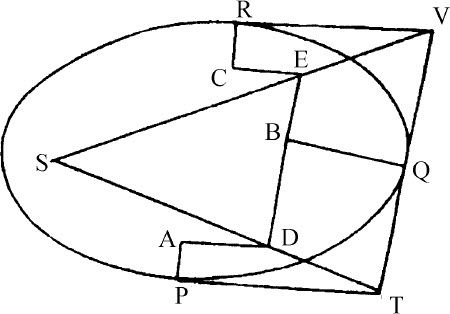
令三条直线PT，TQV，VR与已知图形在同样多的点P，Q，R上相切，并相交于T和V点。在切线上过P，Q，R点作垂线PA，QB和RC，与物体在P，Q，R点的速度成反比，即，PA与QB等价于Q点的速度与P点的速度的比，而QB比RC等于R点与Q点的速度比，过垂线端点A，B，C作直线AD，DBE，EC，使之互成直角，相交于D和E；再作直线TD，VE，并延长至S点，求得中心。
因为由中心S做出的切线PT，QT的垂线反比于物体在点P和Q的速度（由命题1推论Ⅰ），因而正比于垂线AP，BQ，即，正比于由D点做出的切线垂线。由此易于推知点S，D，T在同一条直线上，类似地可知点S，E，V也在同一条直线上，所以，中心S处于直线TD，VE相交处。
证毕。
命题6 定理5
在无阻力空间中，如果物体沿任意轨道环绕一不动中心运行，在最短时间里掠过极短弧长，该弧的正矢等分对应的弦，并通过力的中心：则弧中心的向心力正比于该正矢而反比于时间的平方。
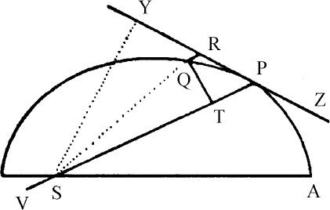
因为给定时间的正矢正比于向心力（由命题1推论Ⅳ），而弧长随时间的增加作相同比率的增加，正矢将以该比率的平方增加（由引理11推论Ⅱ和推论Ⅲ），所以正比于力和时间的平方，两边同除以时间的平方，即得到力正比于正矢，反比于时间的平方。
证毕。
用引理10推论Ⅳ也能同样容易地证明该定理。
推论Ⅰ．如果物体P环绕中心S画出曲线APQ，直线ZPR与该曲线在任意点P上相切，由曲线上另一任意点Q作平行于距离SP的直线，与切线相交于R；再作QT垂直于距离SP，则向心力将反比于
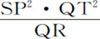
，如果该立方取点P点Q重合时的值的话。因为QR等于弧QP的二倍的正矢，该弧中点是P：也等于三角形SQP的二倍，或SP·QT正比于掠过二倍弧所用的时间，因此，可用以表示时间。推论Ⅱ．由类似的理由，向心力反比于立方
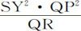
；如果SY是由力的中心伸向轨道切线PR的垂线的话。因为矩形SY·QP与SP·QT相等。推论Ⅲ．如果轨道是圆周，或与一同心的圆周相切或相交，即，轨道在相切或相交处包含有极小角度的圆周，并与点P有相等的曲率与曲率半径；又，如果PV是该圆周上由物体通过力的中心做出的弦，则向心力反比于立方SY2 ·PV。因为PV就是
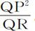
。推论Ⅳ．在相同假设下，向心力正比于速度的平方，反比于弦，因为由命题1推论Ⅰ，速度是垂线SY的倒数。
推论Ⅴ．所以，如果给定任意曲线图形APQ，因而向心力连续指向的点S也给定，即可得到向心力定律：物体P受该定律支配连续偏离直线运动，维持在图形边缘上，通过连续环绕画出相同图形。即，通过计算可以知道，立方
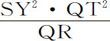
或立方SY2 ·PV反比于QR向心力。下述问题将给出该定律实例。命题7 问题2
如果物体沿圆周运动，求指向任意给定点的向心力的定律。
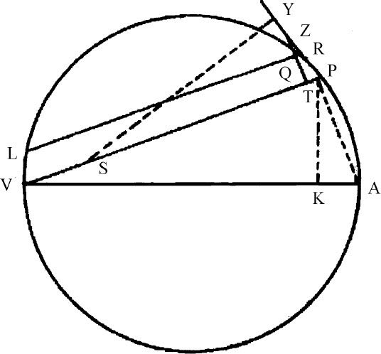
令VQPA是圆周，S是力所指向的给定中心，P是沿圆周运动的物体，Q是物体将要到达的处所，PRZ是圆周在前一个处所的切线。通过点S作弦PV，以及圆的直径VA，连接AP，作QT垂直于SP，并延长与切线PR相交于Z，最后，通过点Q作LR平行于SP，与圆周相交于L，与切线PZ相交于R。因为三角形ZQR，ZTP，VPA相似，RP2 ＝RL·QR，而
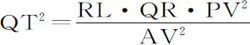
。所以，
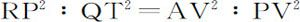
等式两边同乘以
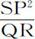
，当点P与Q重合时，RL可写为PV，于是有：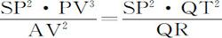
所以，（由命题6推论Ⅰ和Ⅴ）向心力反比于
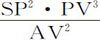
，即（由于AV2 已给定）反比于SP2 与PV3 的乘积。完毕。
另一种解法
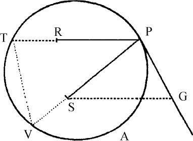
在切线PR上作垂线SY，（由于三角SYP，VPA相似）即有AV比PV等于SP比SY，所以
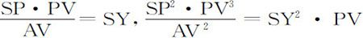
，所以（由命题6推论Ⅲ和Ⅴ）向心力反比于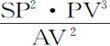
，即（因为AV已经给定）反比于SP2 ·PV3 。推论Ⅰ．如果向心力永远指向的点S已给定，并位于圆周上，如位于V，则向心力反比于SP长度的5次方。
推论Ⅱ．使物体P沿圆周APTV环绕力的中心S运动的力，与使同一物体P沿同一圆周以相同周期环绕另一力的中心R运动的力的比，等于RP2 ·SP与直线SG的立方的比。直线SG是由第一个中心S做出的平行于物体到第二个中心R的距离PR，并与轨道切线PG相交于G点的直线距离。因为，由本命题，前一个力与后一个力的比等于RP2 ·PT3 比SP2 ·PV3 ，也就是说，等于SP·RP2 比
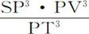
，或正比于（因为三角形PSG，TPV相似）SG3 。推论Ⅲ，使物体P沿任意轨道环绕力的中心S运动的力，与使同一物体沿同一轨道以相同周期环绕另一任意力的中心R的力的比，等于立方SP·RP2 ，其中包括物体到第一个中心S的距离，和物体到第二个力的中心R的距离的平方，与直线SG的立方的比。SG是由第一个力的中心S沿平行于物体到第二个力的中心R的距离的直线到它与轨道切线PG的交点G的距离，因为在该轨道上任意一点P的力与它在相同曲率圆周上的力相等。
命题8 问题3
如果物体沿半圆周PQA运动，试求指向点S的向心力的规律，该点如此遥远，以至于所有指向该点的直线PS，RS，都可看做是平行的。
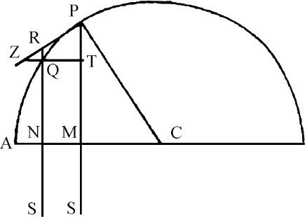
由半圆中心C作半径CA，与诸平行线正交于M，N点，连接CP，因为三角形CPM，PZT和RZQ相似，则有：
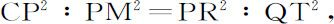
由圆的性质，当P和Q点重合时，PR2 ＝QR（RN＋QN）＝QR·2PM，所以，CP2 :PM2 ＝QR·2PM:QT2 ，而且，
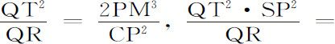
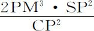
，所以，（由命题6推论Ⅰ和V）向心力反比于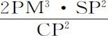
，即（常数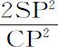
不予考虑）反比于PM3 。完毕。
由上述命题也容易推出相同结论。
附注
由类似理由，物体在椭圆上甚至双曲线或抛物线上运动时，所受到的向心力反比于它到位于无限遥远的力的中心的纵向距离的立方。
命题9 问题4
如果物体沿螺旋线PQS运动，以给定角度与所有半径SP，SQ相交，求指向该螺旋线的中心的向心力的规律。
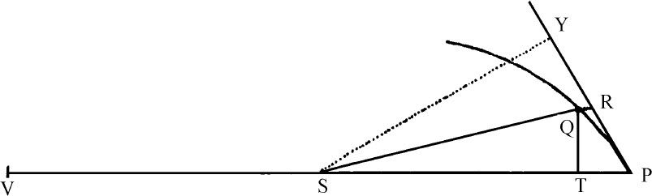
设不定小的角度PSQ为已知，则因为所有的角均已给定，图形SPRQT也就给定。所以，比值
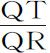
也已给定，于是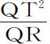
正比于QT（因为图形已给定），即正比于SP，但如果角度PSQ有任何变化，则相切角QPR相对的直线QR（由引理11）将以PR2 或QT2 的比率变化，所以，比值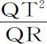
保持不变，仍是SP，而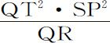
正比于SP3 ，所以，（由命题6推论Ⅰ和Ⅴ）向心力反比于距离SP的立方。完毕。
另一种解法。
作切线的垂线SY，并作与螺旋线共心的圆周的弦PV与螺旋线相交，它与高度SP的比值是给定的。所以SP3 正比于SY2 ·PV，即（由命题6推论Ⅲ和Ⅴ）反比于向心力。
引理12
所有关于给定椭圆或双曲线共轭直径外切的平行四边形都相等。
本书作者已在关于圆锥曲线内容中加以证明。
命题10 问题5
如果物体沿椭圆环行，求指向该椭圆中心的向心力的规律。
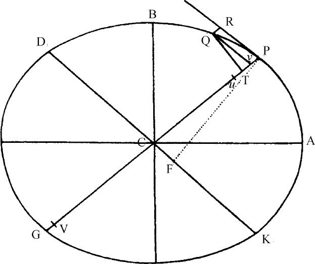
设CA，CB是该椭圆的半轴，GP，DK是其共轭直径，PF，QT垂直于共轭直径，Qv 是到直径GP的纵坐标。如果作平行四边形Qv PR，则（由圆锥曲线性质）Pv ·v G:Qv 2 ＝PC2 :CD2 ，又由于三角形Qv T，PCF相似，Qv 2 :QT2 ＝PC2 :PF2 ，消去
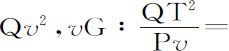
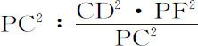
。由于QR＝Pv ，以及（由引理12）BC·CA＝CD·PF，当点P与Q重合时，2PC＝v G，把外项与中项乘到一起，就得到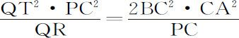
。所以（由命题6推论Ⅴ）向心力反比于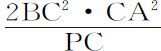
，即（因为2BC2 ·CA2 已给定）反比于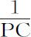
，亦即正比于距离PC。完毕。
另一种解法
在直线PG上点T的另一侧，取点u 使Tu 等于Tv 。再取u V，使u V:v G＝DC2 :PC2 。根据圆周曲线特性，Qv 2 :Pv ·v G＝DC2 :PC2 ，于是Qv 2 ＝Pv ·u V，两边同加Pu ·Pv ，则弧PQ的弦的平方将等于矩形PV·Pv 。所以，与圆锥曲线相切于P点并通过Q点的圆周，也将通过点V，现在令点P与Q会合，则u V与v G的比值，等同于DC2 与PC2 的比值，将变成PV与PG的比值，或PV与2PC的比值，所以，PV等于
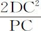
，所以，物体PCP在椭圆上受到的力将反比于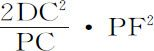
（由命题6推论Ⅲ），即（因为2DC2 ·PF2 已给PC定）正比于PC。完毕。
推论Ⅰ．所以，力正比于物体到椭圆中心的距离。反之，如果力正比于距离，则物体沿着中心与力的中心重合的椭圆运动，或沿椭圆蜕变成的圆周轨道运动。
推论Ⅱ．沿中心相同的椭圆轨道的环绕周期均相等，因为相似的椭圆所用时间相等（由命题4推论Ⅲ和Ⅷ）；但对于长轴相同的椭圆，环绕时间之间的比正比于整个椭圆的面积，反比于同一时间掠过的椭圆的面积。即正比于短轴，反比于在长轴顶点的速度，也就是正比于短轴，反比于公共长轴上同一点的纵坐标，所以（因为正反比值相等）比值相等，1:1。
附注
如果椭圆的中心被移到无限远处，它就演变为抛物线，物体将沿该抛物线运动，力将指向无限远处的中心，是一常数，这正是伽利略的定理。如果圆锥曲线由抛物线（通过改变圆锥截面）演变为双曲线，物体将沿双曲线运动，其向心力变为离心力。与圆周或椭圆中的方法相似，如果力指向位于横坐标上的圆形的中心，则这些力随着纵坐标的任意增减，或甚至于改变纵坐标与横坐标的夹角，总是增减其到中心的距离的比率。而运行周期不变。在所有种类图形中，如果纵坐标作任意增减，或它们相对横坐标的倾角改变，周期都将保持相是，而指向位于横坐标上任意处的中心的力随物体到中心距离比率的变化在不同的纵坐标上增减。